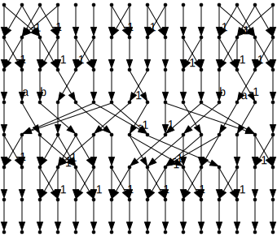
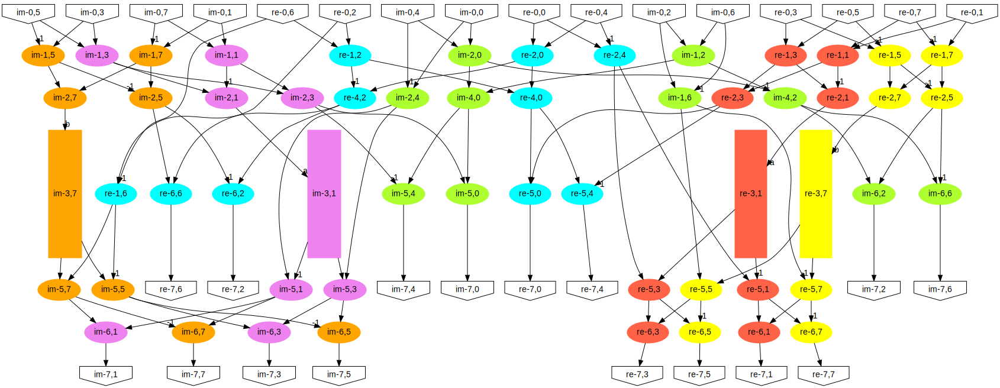
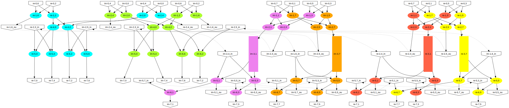

Fourier 8 example
Initial Fourier 8 graph
Complex Fourier Data Flow Graph (DFG) generated from matrix form.52 integer additions, 4 integer multiplications by constant.

00.svg
Shapes for operations
Oval = addition; Box = multiplication;
01.svg
Clean redundant nodes

02.svg
k-way graph partitioning

03.svg
Interconnect map

map.svg
Decouple

04.svg
Straighten ports

06.svg